Guitar lessons in Denver.
Acoustic and electric, songs first. In your home or online. Founding rates from $60 an hour, every rate published.
Songs first, from the first lesson.
Guitar lessons here start with music you're actually interested in. Chords, rhythm, and comfortable hands come first, because that's what carries most songs. We learn from chord charts and by ear, not sight-reading, so you can pick up new songs on your own.
Technique, lead playing, and theory arrive as your playing asks for them. And the theory is plain music theory. Jazz is one palette of colors, and so are pop, rock, and R&B. We pull from whichever palette your songs are painted with.
It started with a guitar in a closet.
The summer after fifth grade, I got a classical guitar out of my mom's closet, and that was the seed of everything. By eighth grade I was serious enough to buy a black Fender with a Floyd Rose and a little practice amp, and I played that thing in my bedroom constantly.
Freshman year I tried out for jazz band and made the B band, not the A band, because I didn't know the difference between major and minor chords. My band director, Larry Kelly, said that was the kind of mud they couldn't have in the A band. He's gone now, and I think of that line with affection, because he was completely right. I understand exactly what he meant today, and getting you to hear what a chord is doing, so it's never mud, is half of what I teach on guitar. By junior year I was playing in church, mostly acoustic, leading music for small groups and youth gatherings.
Today, guitar is my instrument for exploring jazz and melody. As a rhythm player you're supporting harmony, comping in jazz settings or filling out an acoustic bed. On top of that you get to build melodies in linear phrases. That's the relationship I have with it, and it's the guitar I teach.
Beginners, returners, and kids.
Starting fresh, we get your hands comfortable and your first songs moving quickly. Coming back after years away, your hands remember more than you think, and we build on what's still there. Kids' lessons run 45 minutes, in your home, with a parent home.
Strum this.
Six strings in standard tuning, each one a physical model of a plucked string computed live in your browser. Drag across them, tap one at a time, or use keys 1 through 6. The patterns behind this page are cymatics, the shapes sound presses into matter, and they answer what you play.
A toy, honestly. For the real thing, book a lesson.
Where guitar lives for me.
Guitar is my instrument for exploring jazz and melody, and these five are the deep end of that. Warm tone, clear lines, chords that tell you exactly what they're doing. If we work on jazz together, this is the listening.
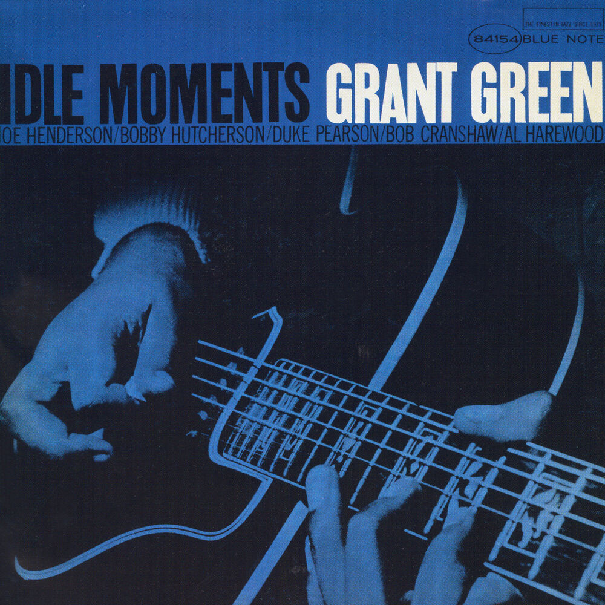
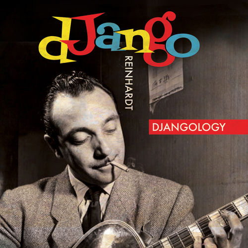
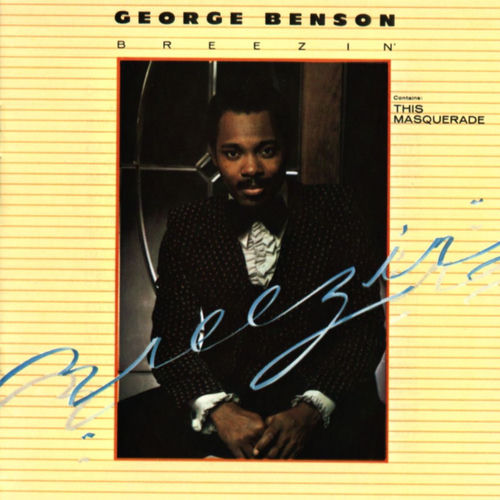
Grant Green, Idle Moments · Wes Montgomery, The Incredible Jazz Guitar of Wes Montgomery · Django Reinhardt, Djangology · George Benson, Breezin' · Joe Pass, Virtuoso
The reason most people pick up a guitar.
Somebody on this shelf is why you're here. That's not a guess, it's just the odds. Every one of these records has songs we can start on early, from chord charts and by ear.
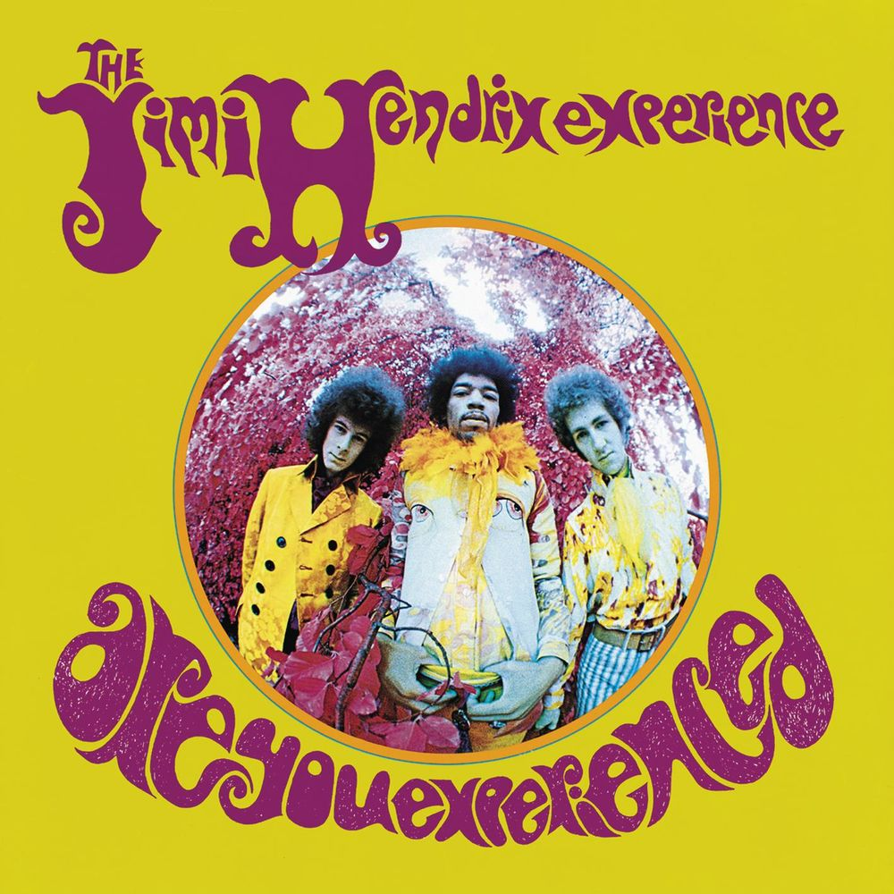
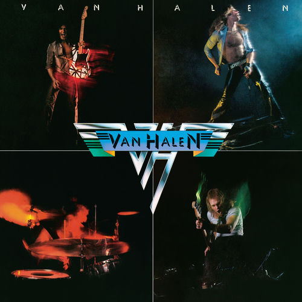
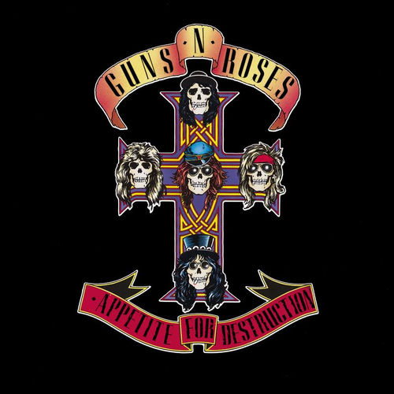
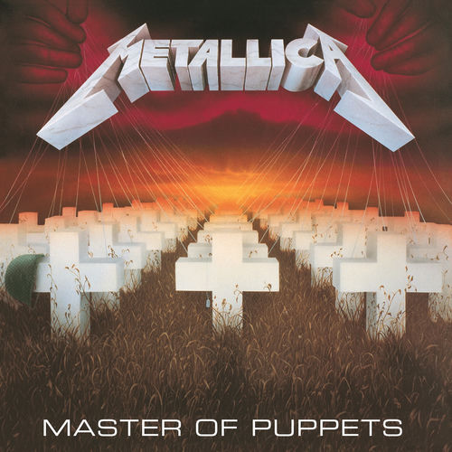
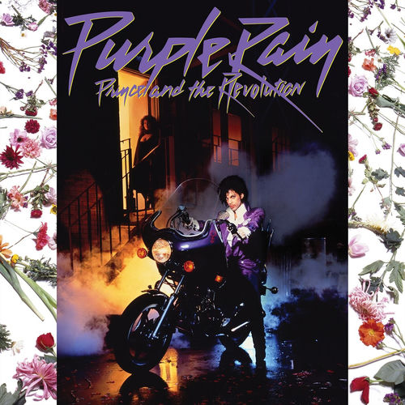
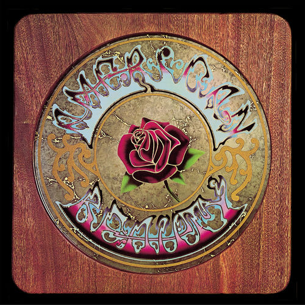
Jimi Hendrix, Are You Experienced · Eddie Van Halen, Van Halen · Slash, Appetite for Destruction · James Hetfield and Kirk Hammett, Master of Puppets · Prince, Purple Rain · Jerry Garcia, American Beauty
Three chords, all the feeling.
Everything on the rock shelf came from this one. A few chords in, blues turns into real music faster than anything else I teach, and Sister Rosetta Tharpe had the whole thing figured out before rock and roll had a name.
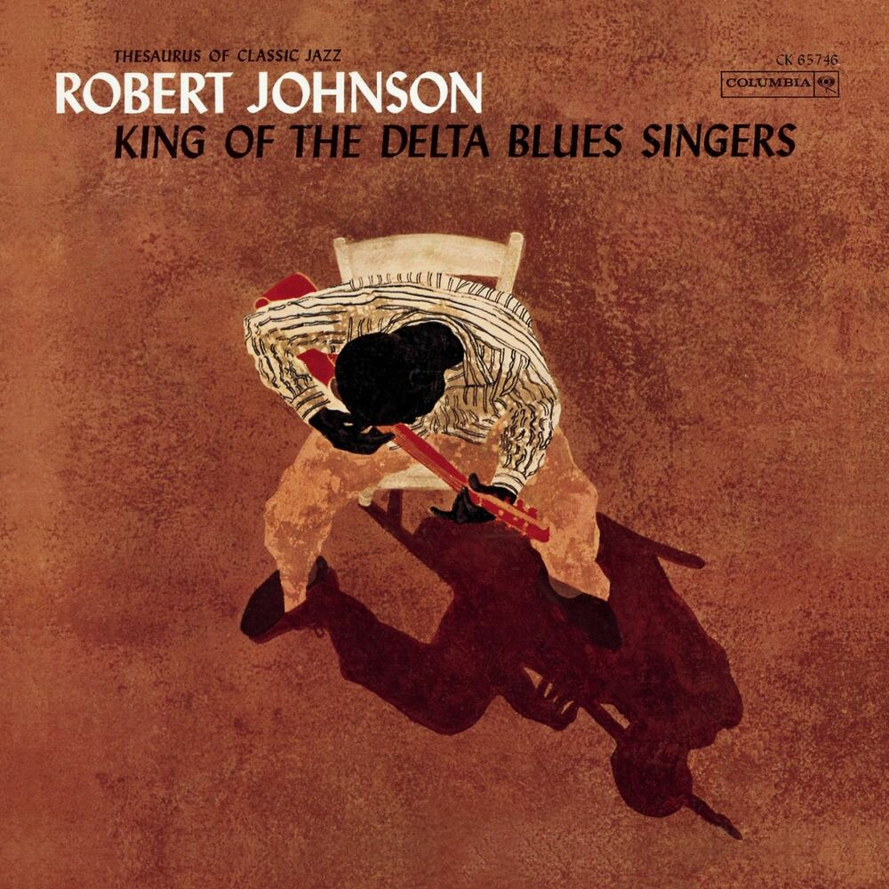
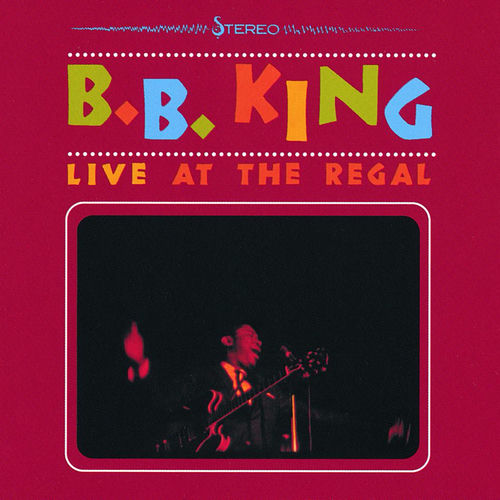
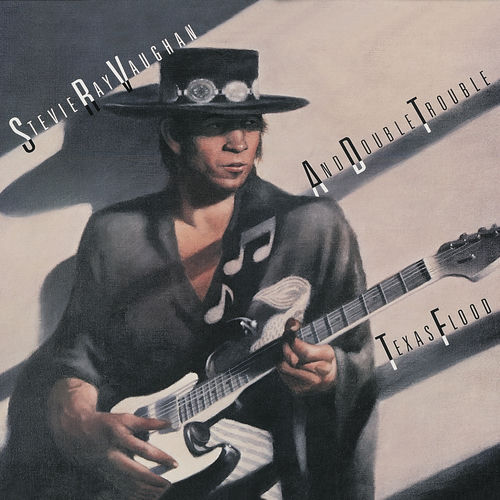
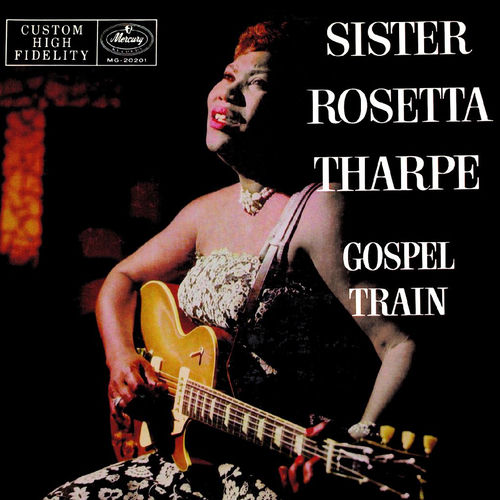
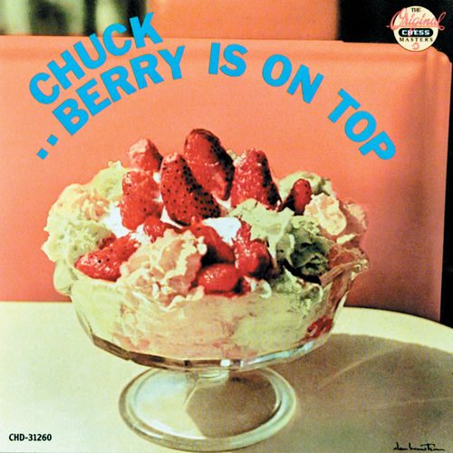
Robert Johnson, King of the Delta Blues Singers · B.B. King, Live at the Regal · Stevie Ray Vaughan, Texas Flood · Sister Rosetta Tharpe, Gospel Train · Chuck Berry, Berry Is On Top
The palettes most players skip.
Funk rhythm, flamenco, fingerstyle, and one ten-minute solo that earns it. Same theory underneath all of them. Jazz is one palette of colors, and so are these, and we can pull from any of them.
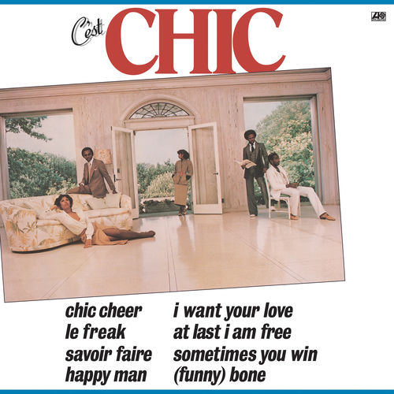
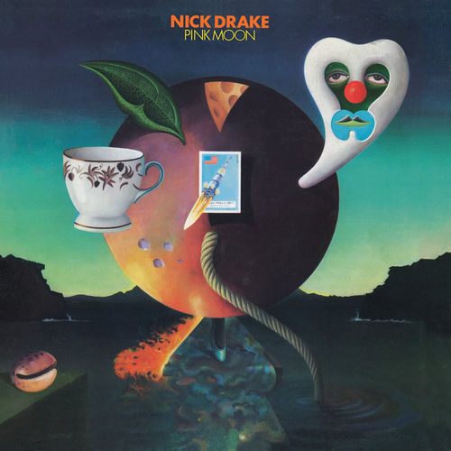
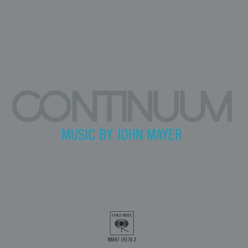
Eddie Hazel, Maggot Brain · Nile Rodgers, C'est Chic · Nick Drake, Pink Moon · Paco de Lucía, Fuente y Caudal · John Mayer, Continuum · Annie Clark, Strange Mercy